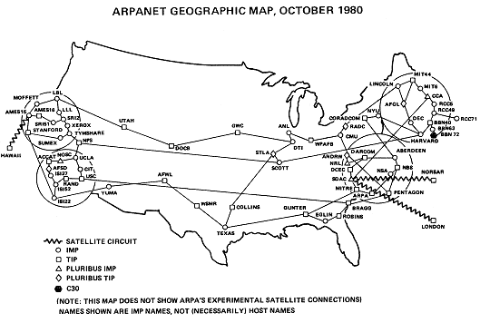

New networks and network standards appear
One of the limitations that
the Department of Defense put on ARPAnet was that only universities conducting
defense-related research could use their network. This limitation was
the driving factor in the creation of Usenet and other inter-university
networks. Another such non-ARPAnet university network was formed in 1981
by CUNY and Yale Universities. The students called it BITnet ("Because
It¹s There" network) because the network connected the computers using
the protocol that was packaged ("there") with IBM¹s mainframe computers.
Again, BITnet used existing telephone lines to connect the computers together,
and given its low cost many other institutions joined the network. By
1990, over 3000 institution-sites were connected to the network enabling
them all to exchange e-mail (again note that this communication was most
likely not totally for research purposes) (Moschovitis).
The National Science Foundation also recognized the limited access of
educational institutions. Their first answer to this problem was a grant
given to the University of Wisconsin, Madison¹s chair of the Computer
Science Department, Larry Landweber. The network that he created in 1981,
CSnet, was chiefly used by academic and industrial researchers in the
field of computer science. The network was in fact a precursor to the
forthcoming NSFnet. 

ARPAnet in Oct., 1980
The mid-eighties brought many
technical advances that created many of the Internet standards that are
still used today. In 1983 ARPAnet forced all of its servers to switch
to the TCP/IP
protocol. Many see this as another defining moment because it standardized
the protocol that the Internet uses to this day; since ARPAnet led the
way, many other networks followed. Also in that year, name servers were
introduced to the network, again at the University of Wisconsin under
the supervision of Larry Landweber. <T>
The job of the name server was to translate the numbers of a physical
network address (in the form of 123.456.789.000, standardized by TCP/IP)
into actual names that were understandable to the users. Each machine
would have its own name that ARPAnet users could remember, however each
server also had to keep a list of the hosts that a user could connect
to. The implication of this was that any site that a server¹s administrator
did not think was appropriate (or perhaps contained commercial content)
could be excluded from the list, thus making it very difficult to route
to a "blacklisted" server. This process was made much simpler in 1984
when Domain Name Servers (DNS) replaced the name servers. The advantage
of DNS was that if one¹s own server did not know the address of a particular
name, it would forward the request to another server or to a centralized
list. This eliminated the need for each server to hold large files and
allowed the number of Internet servers to grow more rapidly. The use of
DNS was also aided by Cisco Corporation¹s introduction of Internet routers
in the same year. <T>